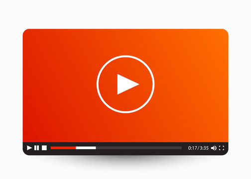

Mindfulness Meditation for Beginners (Video)
Join us for this guided mindfulness meditation session designed specifically for beginners. This video will walk you through simple techniques to focus your attention, observe your thoughts without judgment, and cultivate a sense of calm. Regular practice can help reduce stress, improve focus, and enhance overall well-being. Find a quiet space, get comfortable, and let's begin your journey into mindfulness.
This session covers:
- Introduction to mindfulness
- Guided breathing exercises
- Body scan meditation
- Tips for daily practice
Remember, consistency is key. Even a few minutes a day can make a difference. Explore more resources in our Mental Health Resources module for further learning.